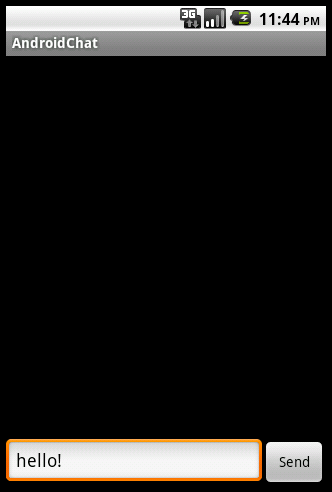

MundoCore on Android
Prerequisites
AndroidChat?
In the following, an implementation of the simple chat example for Android is presented.
The creation of Eclipse projects for Android is similar to the creation of projects for the Standard Edition, as described here:
Creating a New Project in Eclipse.
- Select File > New Project
- Select Android > Android Project, then click Next
- This example uses the following settings:
| Project name: |
AndroidChat? |
| Application name: |
AndroidChat? |
| Package name: |
org.mundo.chat |
| Create Activity: |
ChatTest? |
| Min SDK Version: |
8 |
Project Structure
The following shows the Eclipse project structure of the
AndroidChat? example program:
- src
- org.mundo.chat
- ChatTest.java: the main Java code goes here
- R.java (automatically generated from the resources)
- Android Library
- Referenced Libraries
- mundocore.jar: link the standard 1.5 library here
- assets
- node.conf.xml: put the MundoCore configuration file here
- res
- layout
- main.xml: description of the user interface
- ...
- AndroidManifest.xml
User Interface

The user interface is described in the file
main.xml.
<?xml version="1.0" encoding="utf-8"?>
<LinearLayout xmlns:android="http://schemas.android.com/apk/res/android"
android:orientation="vertical"
android:layout_width="fill_parent"
android:layout_height="fill_parent">
<ScrollView android:layout_width="fill_parent"
android:layout_height="fill_parent"
android:layout_weight="1"
android:id="@+id/scrollView">
<TextView android:layout_width="fill_parent"
android:text="@string/hello"
android:layout_height="fill_parent"
android:layout_weight="1"
android:id="@+id/textPane" />
</ScrollView>
<LinearLayout android:id="@+id/LinearLayout01"
android:layout_height="wrap_content"
android:orientation="horizontal"
android:layout_width="fill_parent">
<EditText android:layout_height="wrap_content"
android:clickable="false"
android:layout_width="fill_parent"
android:layout_weight="1"
android:id="@+id/inputLine"
android:singleLine="true" />
<Button android:layout_height="wrap_content"
android:text="Send"
android:layout_width="fill_parent"
android:layout_weight="4"
android:id="@+id/sendButton" />
</LinearLayout>
</LinearLayout>
Implementation
ChatTest.java contains the implementation.
package org.mundo.chat;
import java.io.InputStreamReader;
import android.app.Activity;
import android.os.Bundle;
import android.view.View;
import android.widget.Button;
import android.widget.EditText;
import android.widget.ScrollView;
import android.widget.TextView;
import org.mundo.rt.LogEntry;
import org.mundo.rt.Mundo;
import org.mundo.rt.Logger;
import org.mundo.rt.Service;
import org.mundo.rt.Publisher;
import org.mundo.rt.IReceiver;
import org.mundo.rt.Message;
import org.mundo.rt.MessageContext;
import org.mundo.rt.TypedMap;
public class ChatTest extends Activity {
/** Called when the activity is first created. */
@Override
public void onCreate(Bundle savedInstanceState) {
super.onCreate(savedInstanceState);
setContentView(R.layout.main);
scrollView = (ScrollView)findViewById(R.id.scrollView);
textPane = (TextView)findViewById(R.id.textPane);
inputLine = (EditText)findViewById(R.id.inputLine);
sendButton = (Button)findViewById(R.id.sendButton);
sendButton.setOnClickListener(new View.OnClickListener() {
public void onClick(View v) {
String text = inputLine.getText().toString();
TypedMap map = new TypedMap();
map.putString("ln", text);
publisher.send(new Message(map));
textPane.append("("+text+")\n");
scrollView.fullScroll(ScrollView.FOCUS_DOWN);
inputLine.setText("");
}
});
Logger.getLogger("global").addHandler(LOG_HANDLER);
try {
Mundo.setConfigXML(new InputStreamReader(getClass().getClassLoader().
getResourceAsStream("assets/node.conf.xml"), "UTF-8"));
} catch(Exception x) {
Logger.getLogger("global").warning("could not read node.conf.xml!");
}
Mundo.init();
Service svc = new Service();
Mundo.registerService(svc);
publisher = svc.getSession().publish("lan", "chattest");
svc.getSession().subscribe("lan", "chattest", CHAT_RECEIVER);
}
@Override
protected void onDestroy() {
Mundo.shutdown();
super.onDestroy();
}
private final IReceiver CHAT_RECEIVER = new IReceiver() {
public void received(Message msg, MessageContext ctx) {
runOnUiThread(new PrintAction(msg.getMap().getString("ln")));
}
};
class PrintAction implements Runnable {
PrintAction(String l) {
ln = l;
}
public void run() {
textPane.append(ln+"\n");
}
private String ln;
}
private final Logger.IHandler LOG_HANDLER = new Logger.IHandler() {
public void publish(LogEntry e) {
if (e.getLevel() <= Logger.WARNING)
runOnUiThread(new PrintAction(e.toString()));
}
};
private Button sendButton;
private TextView textPane;
private EditText inputLine;
private ScrollView scrollView;
private Publisher publisher;
}
AndroidManifest?.xml
By default, Android applications may not enumerate the available network interfaces or open server sockets. It is necessary to request the required permissions first in the manifest. When using Eclipse, perform the following steps to add permissions:
- Open
AndroidManifest.xml (with the Android Manifest Editor)
- Select the Permissions tab
- Click Add
- Select Uses Permission
- Change the name of the new permission to
android.permission.INTERNET
- Save the manifest
Android-specifics in the Java Code
Loading the Configuration File
An Android program uses the following code to read and set the configuration file
node.conf.xml. Note that
Mundo.setConfigXML must be called before
Mundo.init.
Mundo.setConfigXML(new InputStreamReader(getClass().getClassLoader()
.getResourceAsStream("assets/node.conf.xml"), "UTF-8"));
Mundo.init();
Threads
Calls to UI components must not be made from a non-UI thread. For that reason, a message receiver cannot directly modify views, it has to delay the changes and execute them within the UI thread. Using
runOnUiThread is one possible approach:
private final IReceiver CHAT_RECEIVER = new IReceiver() {
public void received(Message msg, MessageContext ctx) {
runOnUiThread(new PrintAction(msg.getMap().getString("ln")));
}
};
class PrintAction implements Runnable {
PrintAction(String l) {
ln = l;
}
public void run() {
textPane.append(ln+"\n");
}
private String ln;
}
Logging
The following is optional. Log output can also be redirected to, e.g., a text view using a log handler:
private final Logger.IHandler LOG_HANDLER = new Logger.IHandler() {
public void publish(LogEntry e) {
runOnUiThread(new PrintAction(e.toString()));
}
}
The handler must then be registered with the MundoCore framework:
Logger.getLogger("global").addHandler(LOG_HANDLER);
Known Issues
Discovery
The emulator comes with a somewhat problematic NAT implementation that does not give the host a real IP address in the NATed address space. For that reason, automatic discovery will not work. Use a host entry in the configuration file of the Android node to explicitly connect to the host PC, which is reachable under the special address
10.0.2.2:
<primary-port xsi:type="xsd:int">4242</primary-port>
<hosts xsi:type="array">
<host xsi:type="map" activeClass="IPTransportService$OptHost">
<name>10.0.2.2</name>
<retry-interval xsi:type="int">3</retry-interval>
</host>
</hosts>
(also see:
http://d.android.com/guide/developing/tools/emulator.html#emulatornetworking)
On the real device, broadcast discovery can be used as usual, e.g.:
<primary-port xsi:type="xsd:int">4242</primary-port>
<broadcast xsi:type="map" activeClass="IPTransportService$OptBroadcast">
<send xsi:type="boolean">true</send>
</broadcast>
Pause/Resume
MundoCore will not be able to communicate correctly after a pause/resume, because the application on the Android phone is completely suspended for a while. Remote peers will run into timeouts and think that the Android node has gone. To fix this problem, force close the application in
onStop:
@Override
public void onStop() {
Mundo.shutdown();
System.exit(0);
}
Alternatively, put the communication inside an Android Service that continues running in the background (
http://developerlife.com/tutorials/?p=356).